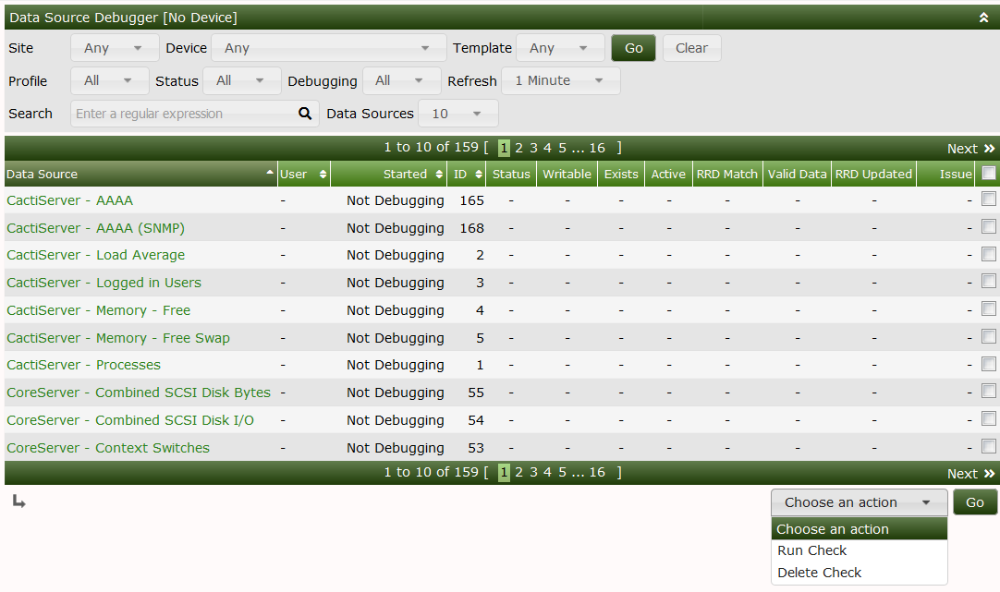
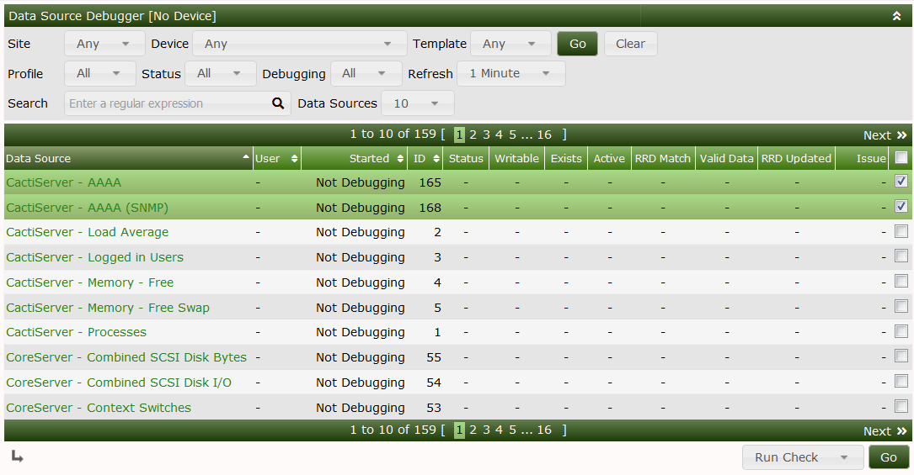
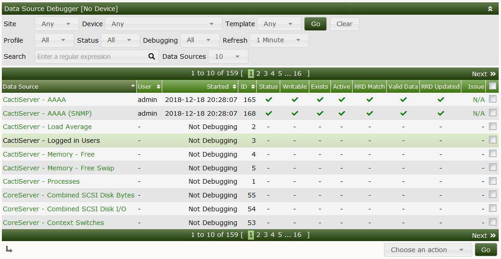
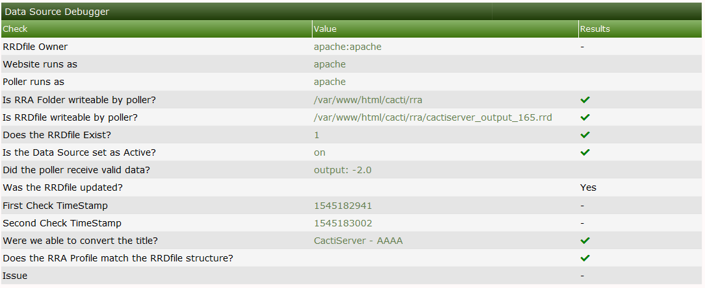

If you are having issues with blank graphs and have done the basic checks such as permissions the Data source debug tool can help troubleshoot what information is coming into Cacti.
The debug tool will check the data source, graphs and permissions along incoming data and graph settings, such as step count, to ensure the definition matches the profile of the data source amongst other things.
The tool allows you to run a debug on one or many data source. To request debug information, tick all applicable data sources you require information on, then select 'Run Check' in the actions drop down list. This will put all of the selected data sources into debug mode.
For a single data source, you can click the data source name which will also put it into debug mode.

You can see the status of each data source along with all of the checks run against it. Successful checks show a green checkmark, whilst failed checks shows a red X. Depending on the issue a recommendation will be provided for a failed check.


A summary of the checks as well as the properties of the data source can be displayed by clicking on the data source name. This is useful for a single page view of the data source and graph details.

This page also shows what the last values where when last polled. This is also useful for troubleshooting as if the data comes in out of range of your Data Source template, or Graph template, this could point you into the right direction.
If the Web Server has write access to Cacti's RRA folder, if the Data Debug finds and issue that it knows how to correct. It will offer you a link to make that correction.
NOTE: Devices that are down for long periods of time will report as having errors since the RRDfiles associated with them will not be updated as expected for with an available Device.
--- Copyright (c) 2004-2024 The Cacti Group